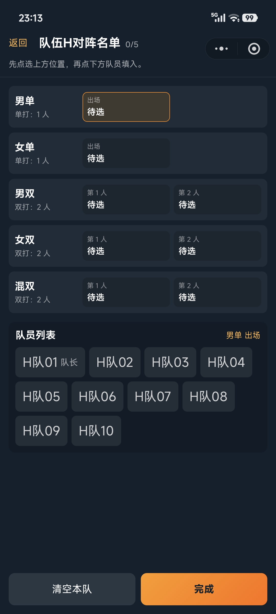
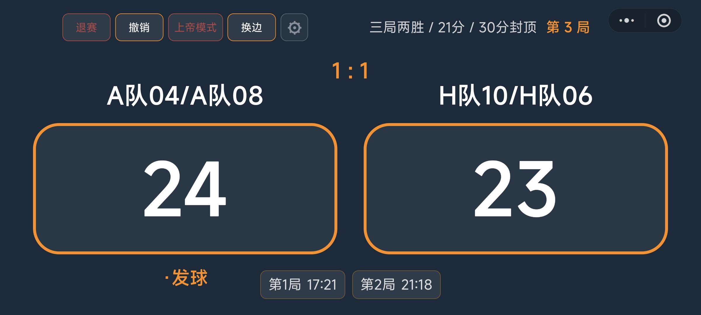

苏迪曼杯五项
每场团体对抗包含男单、女单、男双、女双、混双。单项逐个开始，五项全部完成或淘汰阶段一方先到 3 胜后结算父比赛。
- 适合标准团体赛
- 每个单项使用普通羽毛球记分板
- 父比赛负责统计五项胜负
羽毛球 · 团体赛
团体赛的关键不是单场记分，而是把队伍、队员、阵容、子比赛和父比赛结算串起来。系统把这些状态统一管理，减少现场人工对账。
每场团体对抗包含男单、女单、男双、女双、混双。单项逐个开始，五项全部完成或淘汰阶段一方先到 3 胜后结算父比赛。
双方按固定队员顺序形成双打段落，全场累计总分。到达阶段目标分后切换下一组队员，最终先到总目标分的一方获胜。




父比赛胜者是队伍，不是某个队员；子比赛结果会汇总到父比赛。
接力追分赛直接在父比赛上记总分，阵容通过接力段保存。